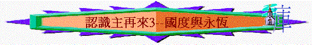

|
主 再 來 |
||
| 預 兆 與 危 機 | 被 提 與 災 難 | 國 度 與 永 恆 |
引言：主在災難中回來的情景是怎樣的？為何要有千禧年國度，不直接進入新天新地？
三.國度與永恆
1.基督降臨
〜當七年大災難至尾聲時，基督再不是單在天上，祂要親自降臨地上
A.降臨的情景
a.萬民皆知道
(1)看見兆頭
「那些日子的災難一過去，日頭就變黑了，月亮也不放光，眾星要從天上墜落，天勢都要震動。」太24:29
「在那些日子，那災難以後，日頭要變黑了，月亮也不放光，」可13:24
〜災難後，人會看見天上有震憾性的改變，日頭變黑、月亮不放光、眾星墜落……
(2)看見人子
「那時，人子的兆頭要顯在天上，地上的萬族都要哀哭。他們要看見人子，有能力，有大榮耀，駕著天上的雲降臨。」太24:30
「看哪，他駕雲降臨！眾目要看見他，連刺他的人也要看見他；地上的萬族都要因他哀哭。這話是真實的。阿們！」啟1:7
〜萬民也要看見主的來臨
b.榮耀的來臨
「那時，他們（馬太二十四章三十節是地上的萬族）要看見人子有大能力、大榮耀，駕雲降臨。」可13:26
(1)滿有榮耀能力
(A)得勝王者的風範
(a)祂的坐騎
「我觀看，見天開了。有一匹白馬，騎在馬上的稱為誠信真實，他審判，爭戰，都按著公義。」啟19:11
〜昔日主在地上騎驢駒子入耶路撒冷，代表祂的順服、謙和，將來祂要騎白馬，用君王得勝者來到世間。
(b)祂的衣服
「他穿著濺了血的衣服；他的名稱為神之道。」啟19:13
「在他衣服和大腿上有名寫著說：「萬王之王，萬主之主。」」啟19:16
〜「濺了血」代表祂行審判，會沾染很多人的血。
〜衣服和大腿上，寫著萬王之王，萬主之主，祂才配稱此名號，魔鬼，敵基督也不能。
(c)祂的頭飾
「他的眼睛如火焰，他頭上戴著許多冠冕；又有寫著的名字，除了他自己沒有人知道。」啟19:12
〜有許多冠冕，寫著的名字，除祂以外，沒人認識，可能代表一些屬祂的人，有新名字，是主所認識的，而祂們將得冠冕，所以主頭上有許多冠冕，等著賞賜人。
(d)祂的雲彩
「那時，人子的兆頭要顯在天上，地上的萬族都要哀哭。他們要看見人子，有能力，有大榮耀，駕著天上的雲降臨。」太24:30
(B)公義誠信的顯明
(a)祂的名稱
「他穿著濺了血的衣服；他的名稱為神之道。」啟19:13
〜一個審判者，需要誠信，真實，沒假，沒歪，說話有權柄，判語有果效。
〜基督完全可以做得到，祂稱為「誠信」「真實」又為「神之道」，所說的話沒有一句不帶能力！
(b)祂的眼目
「他的眼睛如火焰，他頭上戴著許多冠冕；又有寫著的名字，除了他自己沒有人知道。」啟19:12
〜如火焰，能察驗人的罪
(c)祂的工具
「有利劍從他口中出來，可以擊殺列國。他必用鐵杖轄管（轄管：原文作牧）他們，並要踹全能神烈怒的酒醡。」啟19:15
〜用劍，用鐵杖審判轄管世界。
(2)眾多使者陪伴
「人子要在他父的榮耀裡同著眾使者降臨；那時候，他要照各人的行為報應各人。」太16:27
「亞當的七世孫以諾，曾預言這些人說：「看哪，主帶著他的千萬聖者降臨，」猶1:14
(3)臨至橄欖山上
「那日，他的腳必站在耶路撒冷前面朝東的橄欖山上。這山必從中間分裂，自東至西成為極大的谷。山的一半向北挪移，一半向南挪移。」亞14:4
「說了這話，他們正看的時候，他就被取上升，有一朵雲彩把他接去，便看不見他了。當他往上去，他們定睛望天的時候，忽然有兩個人身穿白衣，站在旁邊，說：「加利利人哪，你們為什麼站著望天呢？這離開你們被接升天的耶穌，你們見他怎樣往天上去，他還要怎樣來。」有一座山，名叫橄欖山，離耶路撒冷不遠，約有安息日可走的路程。當下，門徒從那裡回耶路撒冷去，」徒1:9-12
〜當日主是在橄欖山升天，天使對門徒說主怎樣往天上去，也怎樣回來，而撒迦利亞書也預言主的腳必站在橄欖山，所以主降臨時，祂會臨在耶路撒冷的橄欖山上。
(4)眾光也要引退
「那日，必沒有光，三光必退縮。」亞14:6
〜因為主才是真正的主角，祂的榮光已令眾光變黯然！
c.選民被招聚
「他要差遣天使，把他的選民，從四方（方：原文作風），從地極直到天邊，都招聚了來。」」可13:27
B.帶來的審判
a.替聖民伸冤
「天哪，眾聖徒、眾使徒、眾先知啊，你們都要因他歡喜，因為神已經在他身上伸了你們的冤。」啟18:20
b.與萬民爭戰
「許多許多的人在斷定谷，因為耶和華的日子臨近斷定谷。日月昏暗，星宿無光。」珥3:14-15
「他們與羔羊爭戰，羔羊必勝過他們，因為羔羊是萬主之主、萬王之王。同著羔羊的，就是蒙召、被選、有忠心的，也必得勝。」」啟17:14
〜將來敵神的群體會一同聯盟，進入耶路撒冷，與聖民爭戰，但主必親自
臨在，為以色列人爭戰，並能得到最後的勝利。
c.仇敵皆受罰
(1)敵基督與假先知→被扔在火湖裏
「那獸被擒拿；那在獸面前曾行奇事、迷惑受獸印記和拜獸像之人的假先知，也與獸同被擒拿。他們兩個就活活的被扔在燒著硫磺的火湖裡；」啟19:20
(2)其餘敵擋者→被主所滅
「其餘的被騎白馬者口中出來的劍殺了；飛鳥都吃飽了他們的肉。」啟19:21
(3)魔鬼→被捆綁
「我又看見一位天使從天降下，手裡拿著無底坑的鑰匙和一條大鍊子。他捉住那龍，就是古蛇，又叫魔鬼，也叫撒但，把他捆綁一千年，扔在無底坑裡，將無底坑關閉，用印封上，使他不得再迷惑列國。等到那一千年完了，以後必須暫時釋放他。」啟20:1-3
〜魔鬼撒但會被捉住，在無底坑中被捆一樣，一千年後要釋放牠！
2.聖徒復活
「那時，保佑你本國之民的天使長（原文作大君）米迦勒必站起來，並且有大艱難，從有國以來直到此時，沒有這樣的。你本國的民中，凡名錄在冊上的，必得拯救。睡在塵埃中的，必有多人復醒。其中有得永生的，有受羞辱永遠被憎惡的。」但12:1-2
「我又看見幾個寶座，也有坐在上面的，並有審判的權柄賜給他們。我又看見那些因為給耶穌作見證，並為神之道被斬者的靈魂，和那沒有拜過獸與獸像，也沒有在額上和手上受過他印記之人的靈魂，他們都復活了，與基督一同作王一千年。這是頭一次的復活。（其餘的死人還沒有復活，直等到那一千年完了。）」啟20:4-5
〜之前被提的復活，重點是在教會，在災難後的復活重點是舊約的以色列人及在災難中被殺的信徒(他們在災難期信主)
3.千年國度
〜當災難過後，主要在地上作王，建立千年國度(也稱為千禧年)為何要在地上立實質的國度，不即刻天地更新，建立新天新地？
A.建立千年國度的原因
a.要應驗亞伯拉罕之約
～亞伯拉罕之約還未應驗
在創12、13、15、17章中，神應許亞伯拉罕很多福氣，並透過約落實，而此約所提及的內容完全是對以色列人有莫大的關係，但所提的應許至今仍未實現，例如：
(1)地上的未落實
～神應許賜一塊地土給以色列（創13：7、15：18-21、17：8）地界是從埃及河直到伯拉大河，但從歷史中，仍未見到以色列得到此界限的地土。
(2)永遠的君王未出現（創17：5-7）
～國度必出現，更有君王從亞伯拉罕而出，而此約是永遠，即永遠有王管治，但歷世歷代，以色列人都未出現有王永遠延續或有永遠的君王管治以色列。
～所以由此可見亞伯拉罕之約仍未應驗，但神的應許不可能不會實現的，因祂是真實，可信的，所以必會在一時間完全應驗，而聖經啟20，及許多經文就印証了千禧年以色列民必有廣大的地土及主基督必作永遠的王，而以色列民都一直期待一位真正彌賽亞永遠管治他們，所以可見千禧年便是應驗神給以色列人的應許，若果千禧年不應驗，我們難發現會有那一個時期在聖經有記載的會落實亞伯拉罕之應許。新天新地時代，沒天地，也不能應驗，所以千禧年一定要應驗才能落實神對以色列民的應許。
b.要賞賜跟隨主的門徒
～太19：28-30、24-25題及主應許到復興時，人子坐在寶座上，門徒也要坐十二寶座上，審判以色列，而且24-25也說明主會從天上駕雲降臨，所以千禧年的應許主也親自肯定的！
B.將來千年國度的圖畫
a.有地土的國度
(1)山勢必改變
「那日，他的腳必站在耶路撒冷前面朝東的橄欖山上。這山必從中間分裂，自東至西成為極大的谷。山的一半向北挪移，一半向南挪移。」亞14:4
「全地，從迦巴直到耶路撒冷南方的臨門，要變為亞拉巴。耶路撒冷必仍居高位，就是從便雅憫門到第一門之處，又到角門，並從哈楠業樓，直到王的酒醡。」亞14:10
〜耶路撒冷朝東的橄欖山將從中間分裂，形成一個大谷，耶路撒冷必居高位，超過周圍的地土。
(2)活水會湧流
「那日，必有活水從耶路撒冷出來，一半往東海流，一半往西海流；冬夏都是如此。」亞14:8
「到那日，大山要滴甜酒；小山要流奶子；猶大溪河都有水流。必有泉源從耶和華的殿中流出來，滋潤什亭谷。」珥3:18
(3)聖地得擴展
「主耶和華如此說：「你們要照地的境界，按以色列十二支派分地為業。約瑟必得兩分。你們承受這地為業，要彼此均分；因為我曾起誓應許將這地賜與你們的列祖；這地必歸你們為業。「地的四界乃是如此：北界從大海往希特倫，直到西達達口。又往哈馬、比羅他、西伯蓮（西伯蓮在大馬色與哈馬兩界中間），到浩蘭邊界的哈撒哈提干。這樣，境界從海邊往大馬色地界上的哈薩以難，北邊以哈馬地為界。這是北界。「東界在浩蘭、大馬色、基列，和以色列地的中間，就是約但河。你們要從北界量到東海。這是東界。「南界是從他瑪到米利巴加低斯的水，延到埃及小河，直到大海。這是南界。「西界就是大海，從南界直到哈馬口對面之地。這是西界。」結47:13-20
b.有人類的國度
在啟示錄20章及但以理書中，我們看到千禧年有以下幾類人仕會進入：
(1)有審判權柄坐在寶座上的人（啟20：4）
「我又看見幾個寶座，也有坐在上面的，並有審判的權柄賜給他們。我又看見那些因為給耶穌作見證，並為神之道被斬者的靈魂，和那沒有拜過獸與獸像，也沒有在額上和手上受過他印記之人的靈魂，他們都復活了，與基督一同作王一千年。」啟
20:4
～他們是誰？可能是十二使徒，因主曾對十二使徒說：「到復興的時候，人子坐在祂榮耀的寶座上。你們也要坐在十二個寶坐下．．．」另外，當中也有今日恩典時代信徒，林前6：2-3及提後2：12說明信徒要與主同作王，審判世界。
～就是那些為主作見証，並為神之道被斬，沒拜獸及受印之人了，他們雖死（在大災難中），但必在千禧年與主同復活作王。
(3)
～但12講及在未期必有多人復醒，起來享福，所以舊約的信徒極可能「大艱難」（但12：1）後，復活，向永生，進入千禧年國度。
(4)有在大災難仍然活著的猶太人和外邦人
「其中必沒有數日夭亡的嬰孩，也沒有壽數不滿的老者；因為百歲死的仍算孩童，有百歲死的罪人算被咒詛。」賽65:20
～啟20提及有王，有王必有國民，國民是誰？必定是那些沒有拜獸而仍有存留的猶太人和外邦人，因他們們敬畏神，相信神，所以主再來，沒有用口中劍殺了他們（啟19），而啟20沒說他們被提或死去，必然是在千禧年國度中存留了。
〜他們會生兒養女，有後裔，而他們在千禧年中是沒有死亡的
c.有君王的國度
「那日，必是耶和華所知道的，不是白晝，也不是黑夜，到了晚上才有光明。」亞14:7
「我必使瘸腿的為餘剩之民，使趕到遠方的為強盛之民。耶和華要在錫安山作王治理他們，從今直到永遠。」彌4:7
～基督將要同復活的詢道者同作王，管治千禧年的國度、國民、而政權必是以基督管治為中心，必充滿公平、公義，帶來安息的（耶23：5-6；賽2：4、11：5-9），而管治的主要基地，是耶路撒冷，因訓誨必出於錫安（賽2：3），耶路撒冷必稱為聖（賽4：3-5）
d.有敬拜的國度
「末後的日子，耶和華殿的山必堅立，超乎諸山，高舉過於萬嶺；萬民都要流歸這山。必有許多國的民前往，說：來吧，我們登耶和華的山，奔雅各神的殿。主必將他的道教訓我們；我們也要行他的路。因為訓誨必出於錫安；耶和華的言語必出於耶路撒冷。」彌4:1-2
～在國度中，耶路撒冷必成為敬拜的中心（彌4：1-2），而聖殿會重建（結40：1-46：24），當中有祭祀，但所獻的祀不是為了贖罪，乃是為了記念主的救贖工作。
e.有聖靈澆灌的國度
「以後，我要將我的靈澆灌凡有血氣的。你們的兒女要說預言；你們的老年人要做異夢，少年人要見異象。]在那些日子，我要將我的靈澆灌我的僕人和使女。」珥2:28-29
～瑪2：28-29提到在國度，復興中，聖靈會澆灌凡有血氣的人，人從最大至最小，必遵守神的訓誨（結36：37）。
f.國泰民安、人民快樂、萬物和諧的國度
「他必在多國的民中施行審判，為遠方強盛的國斷定是非。他們要將刀打成犁頭，把槍打成鐮刀。這國不舉刀攻擊那國；他們也不再學習戰事。人人都要坐在自己葡萄樹下和無花果樹下，無人驚嚇。這是萬軍之耶和華親口說的。萬民各奉己神的名而行；我們卻永永遠遠奉耶和華我們神的名而行。」彌4:3-5
「城內居民必不說：我病了；其中居住的百姓，罪孽都赦免了。」賽33:24
「那時，瞎子的眼必睜開；聾子的耳必開通。那時，瘸子必跳躍像鹿；啞巴的舌頭必能歌唱。在曠野必有水發出；在沙漠必有河湧流。」賽35:5-6
「豺狼必與羊羔同食；獅子必吃草與牛一樣；塵土必作蛇的食物。在我聖山的遍處，這一切都不傷人，不害物。這是耶和華說的。」賽65:25
～調國度是一個不舉刀攻擊別國，和平的國度，而且在千禧年再沒有疾病，百姓歡喜快樂，人與動物充滿和諧。
4.最後爭戰
a.撒但的得釋
「那一千年完了，撒但必從監牢裡被釋放，出來要迷惑地上四方（原文作角）的列國，就是歌革和瑪各，叫他們聚集爭戰。他們的人數多如海沙。」啟20:7-8
〜撒但在一千年完後，會被釋放迷惑列國，因為在千禧年中，人的壽命特長，不會有死亡，所以會有很多子孫，他們的子孫是否真正順服神呢？可能在環境有利情況下(沒有試探，沒有仇殺，沒有缺乏，沒有人不曉神的話)，他們表面順服神，但神給人最後一個選擇權，可以順服及不順服(這才是真正的自由)，因此用撒但為工具迷惑人，也試煉人內裏的順服。
b.聚集的爭戰
「出來要迷惑地上四方（原文作角）的列國，就是歌革和瑪各，叫他們聚集爭戰。他們的人數多如海沙。他們上來遍滿了全地，圍住聖徒的營與蒙愛的城，就有火從天降下，燒滅了他們。」啟20:8-9
「人子啊，你要面向瑪各地的歌革，就是羅施、米設、土巴的王發預言攻擊他，」結38:2
「波斯人、古實人，和弗人（又作呂彼亞人），各拿盾牌，頭上戴盔；歌篾人和他的軍隊，北方極處的陀迦瑪族和他的軍隊，這許多國的民都同著你。」結38:5-6
〜提及「歌革」和「瑪各」，以西結書曾用過以上名字，形容有北方的地方及領袖聯合其它民族，國家來到以色列地。
〜此處可能借用來表達有敵神的勢力聯合地上四方的列國，要圍住聖徒的營與蒙愛的城(應指耶路撒冷)
c.烈火的刑罰
「他們上來遍滿了全地，圍住聖徒的營與蒙愛的城，就有火從天降下，燒滅了他們。那迷惑他們的魔鬼被扔在硫磺的火湖裡，就是獸和假先知所在的地方。他們必晝夜受痛苦，直到永永遠遠。」啟20:9-10
〜敵神的人終被「大火燒滅」而魔鬼最後的結果是被扔在火湖裏。
5.至終裁決
「他們必出去觀看那些違背我人的屍首；因為他們的蟲是不死的；他們的火是不滅的；凡有血氣的都必憎惡他們。」賽66:24
A.白色寶座的出現
「我又看見一個白色的大寶座與坐在上面的；從他面前天地都逃避，再無可見之處了。」啟20:11
〜「白色的大寶座」是白色的，代表聖潔無污，此寶座是審判的寶座，坐在上面的只有一位，乃是我們的主。
〜「從他面前天地都逃避」可能預備新天新地來臨，也代表神公義的審判來臨，一切遮掩人的蔭庇也挪開，人預備來到神前。
B.死了之人的受審
「我又看見死了的人，無論大小，都站在寶座前。案卷展開了，並且另有一卷展開，就是生命冊。死了的人都憑著這些案卷所記載的，照他們所行的受審判。於是海交出其中的死人；死亡和陰間也交出其中的死人；他們都照各人所行的受審判。死亡和陰間也被扔在火湖裡；這火湖就是第二次的死。若有人名字沒記在生命冊上，他就被扔在火湖裡。」啟20:12-15
〜死了的人----包括在大災難前，大災難中，及千禧年尾聲一切死了而得罪神的人，必站
在寶座前。
〜憑著案卷所記載的受審判，若人沒名字記在生命冊上，他們會被扔在火湖裏。
6.新天新地
A.天地廢去
「但主的日子要像賊來到一樣。那日，天必大有響聲廢去，有形質的都要被烈火銷化，地和其上的物都要燒盡了。這一切既然都要如此銷化，你們為人該當怎樣聖潔，怎樣敬虔，切切仰望神的日子來到。在那日，天被火燒就銷化了，有形質的都要被烈火鎔化。但我們照他的應許，盼望新天新地，有義居在其中。」彼後3:10-13
〜一切有形質都會被烈火銷化
B.一切更新
a.更新的環境
「我又看見一個新天新地；因為先前的天地已經過去了，海也不再有了。我又看見聖城新耶路撒冷由神那裡從天而降，預備好了，就如新婦妝飾整齊，等候丈夫。」21:1-2
「我若去為你們預備了地方，就必再來接你們到我那裡去，我在那裡，叫你們也在那裡。」約14:3
〜強調舊的地海已不再有了，約翰眼前的是新天新地，有新的局面。
〜在新天地中，他看見聖城新耶路撒冷已預備好了，正如主耶穌同門徒講過祂去原是為他們預備地方，一個全新的地方如預備好了的新婦從天而降，比原先會更好，更美。
b.更新的關係
(1)神與人關係的更新
「我聽見有大聲音從寶座出來說：「看哪，神的帳幕在人間。他要與人同住，他們要作他的子民。神要親自與他們同在，作他們的神。」啟21:3
〜神人的關係，自從人犯罪後有改變，但在新天新地中，神親自與人同住，作他們的神。
(2)人與人關係的更新
「當復活的時候，人也不娶也不嫁，乃像天上的使者一樣。」太22:30
〜今日社會有父子、夫婦、兄弟的關係，將來在天上，我們像天上的使者一樣，天使沒有倫常、夫婦關係，我們也沒有了，是一個更美、更新的關係。
c.更新的生活
「神要擦去他們一切的眼淚；不再有死亡，也不再有悲哀、哭號、疼痛，因為以前的事都過去了。」」啟21:4
〜與神一同的生活中，再沒有死亡，眼淚，痛苦的事了！
d.更新的產業
(1)得生命泉的水
「他又對我說：「都成了！我是阿拉法，我是俄梅戛；我是初，我是終。我要將生命泉的水白白賜給那口渴的人喝。得勝的，必承受這些為業：我要作他的神，他要作我的兒子。惟有膽怯的、不信的、可憎的、殺人的、淫亂的、行邪術的、拜偶像的，和一切說謊話的，他們的分就在燒著硫磺的火湖裡；這是第二次的死。」」啟21:6-8
〜信的人，所承受的是生命泉的水，代表有永活的生命。
〜不信的人，他們所得的分，卻不是生命，乃是第二次的死。
(2)得耶路撒冷新城
(A)預備整齊
「拿著七個金碗、盛滿末後七災的七位天使中，有一位來對我說：「你到這裡來，我要將新婦，就是羔羊的妻，指給你看。」」啟21:9
〜城如同新婦，妻子已預備好了，最完善全備的地方從天而降。
(B)榮美外貌
「城中有神的榮耀；城的光輝如同極貴的寶石，好像碧玉，明如水晶。」啟21:11
「牆是碧玉造的；城是精金的，如同明淨的玻璃。城牆的根基是用各樣寶石修飾的：第一根基是碧玉；第二是藍寶石；第三是綠瑪瑙；第四是綠寶石；第五是紅瑪瑙；第六是紅寶石；第七是黃璧璽；第八是水蒼玉；第九是紅璧璽；第十是翡翠；第十一是紫瑪瑙；第十二是紫晶。
十二個門是十二顆珍珠，每門是一顆珍珠。城內的街道是精金，好像明透的玻璃。」21:18-21
〜用世界上各種極貴的寶石形容她的美麗，她的榮耀。
〜更重要裏面有神的榮耀，比地上的任何的榮耀更榮耀。
(C)合一關係
「有高大的牆，有十二個門，門上有十二位天使；門上又寫著以色列十二個支派的名字。東邊有三門、北邊有三門、南邊有三門、西邊有三門。城牆有十二根基，根基上有羔羊十二使徒的名字。」啟21:12-14
〜門有十二天使，十二支派名字，城牆有十二根基，有羔羊十二使徒名字。
〜原來此城刻有天使，舊約人物，新約聖徒的名，代表在此城，天使，舊約新約聖徒，一切受造之物(屬神的)同歸於一，彼此有合一關係，同承受此產業。
(D)極其高大
「城是四方的，長寬一樣。天使用葦子量那城，共有四千里，長、寬、高都是一樣；又量了城牆，按著人的尺寸，就是天使的尺寸，共有一百四十四肘。」啟21:16-17
〜四千里，約1500里，半個美國之闊，但同樣有1500里的高，在世界，在至今仍未找到這麼高的城。
〜如果用葦子量度，此乎此城不是一個象徵，一個意境，乃是實在有高有闊，有門，有街的。
(E)神在中間
「我未見城內有殿，因主神全能者和羔羊為城的殿。」啟21:22
〜聖殿代表神同在的表記，但聖城已不須有殿了，因神親自與人同住。
(F)完全光明
「那城內又不用日月光照；因有神的榮耀光照，又有羔羊為城的燈。列國要在城的光裡行走；地上的君王必將自己的榮耀歸與那城。城門白晝總不關閉，在那裡原沒有黑夜。人必將列國的榮耀、尊貴歸與那城。凡不潔淨的，並那行可憎與虛謊之事的，總不得進那城；只有名字寫在羔羊生命冊上的才得進去。」啟21:23-27
「不再有黑夜；他們也不用燈光、日光，因為主神要光照他們。他們要作王，直到永永遠遠。」啟22:5
〜再沒有黑暗，敗環的事，再進入城中必是光明之人，神也親自成為城中的光，故不須日月的照明了。
(G)內有永生
「天使又指示我在城內街道當中一道生命水的河，明亮如水晶，從神和羔羊的寶座流出來。
在河這邊與那邊有生命樹，結十二樣（或作：回）果子，每月都結果子；樹上的葉子乃為醫治萬民。以後再沒有咒詛；在城裡有神和羔羊的寶座；他的僕人都要事奉他。」啟22:1-3
〜聖殿內再沒有死亡，病痛咒詛，因內有生命樹(伊甸園之生命樹再重現，吃了的可不死)，有醫治萬民的葉子。
(H)更得尊榮
「以後再沒有咒詛；在城裡有神和羔羊的寶座；他的僕人都要事奉他，也要見他的面。他的名字必寫在他們的額上。不再有黑夜；他們也不用燈光、日光，因為主神要光照他們。他們要作王，直到永永遠遠。」啟22:3-5
〜人在新耶路撒冷中可作神的僕人，可以面對面見神，也可以作王，這是何等尊貴榮耀的事。
總結
(1)主再來是信徒所渴慕的日子
「證明這事的說：「是了，我必快來！阿們！主耶穌啊，我願你來！」啟22:20
(2)主快來成信徒要敬虔的提醒